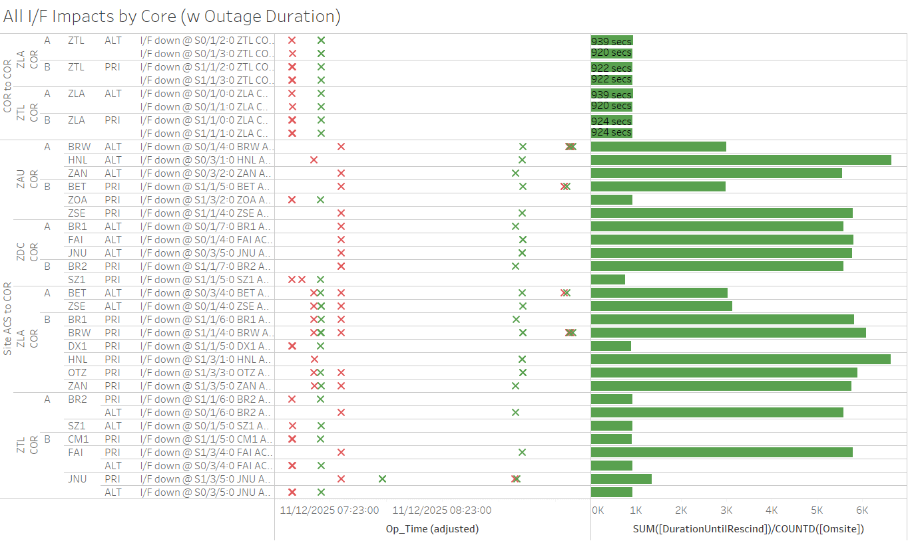

Weekly Highlights 20251105-20251112
11/5 - DX1 RFU M&C Comm Fault
- 11/5 18:20 - DX1 GUS RFU-M&C Comm Fault (~1 second, no Fault)
11/6 - ZBW WRE-B Flapping Subframe Reasonability
- 11/6 00:48 - ZBW WRE-B started flapping SE 728 Subframe Reasonability for all C&Vs...
- 11/7 01:50 - ZBW WRE-B to Maintenance and Control Powered to address SE 728s; restored to Normal at 11/7 02:38
- 11/7 03:40 - ZBW WRE-B SE 728 Subframe Reasonability for ZTL Only...
- 11/7 08:12 - ZBW WRE-B SE 728 Subframe Reasonability for all C&Vs...
- 11/7 14:33 - ZBW WRE-B to Maintenance until Engineering can discuss issue...
- 11/10 13:41 - ZBW WRE-B to Verification to monitor phase noise...
- 11/12 16:39 - ZBW WRE-B restored to Normal Mode after monitoring phase noise for 24 hours
11/6 - BR1 Waveguide Dehydrator Replaced
- 11/6 16:09 - BR1 GUS to Maintenance to replace waveguide dehydrator -- ref LIR 216412721; restored to Backup at 11/6 17:08
11/8-11/12 - Subframe Reasonability Sig Events
- 11/8 01:52 - MMD WRS alarmed with SE 728 Subframe Reasonability for ZLA and ZTL C&Vs and PID WRS Down at 11/8 01:55
- 11/8 02:03 - MTP WRS alarmed with SE 728 Subframe Reasonability for all C&Vs between 11/8 02:03 and 11/8 02:49
- 11/9 01:58 - ZSU WRS alarmed with SE 728 Subframe Reasonability for all C&Vs and PID WRS Down at 11/9 02:03
11/12 - G4 Geomagnetic Storm
- 11/12 01:18 - All C&Vs alarmed with SE 757
IGPs with High GIVEI (IGP) -- G4
(Severe) Storm Levels Reached;
SEs rescinded at 11/12 02:05
- 11/12 01:37 - MMD alarmed with SE 728 Subframe Reasonability and PID WRS Down for ZLA C&V only
- 11/12 02:01 - SE 728 Subframe Reasonability for MMX WRE-A and WRE-B + PID WRS Down for all C&Vs
- 11/12 03:39 - All C&Vs alarmed with SE 757 IGPs with High GIVEI (IGP); SEs rescinded at 11/12 04:25
11/12 - MRs Affecting Multiple Sites
- 11/12 07:02 - ZLA-ZTL Ring 1 ALT / Ring 2 PRI
comms down hard + some other WRS and GUS comms
for
MR-213234 - L3 to support FW9500 transition...- 11/12 07:14 - Additional ZLA-WRS comms down hard...
- 11/12 07:18 - All lines cleared (~924 seconds)
- 11/12 07:28 - Alaska + Brewster site comms down
hard --
MR-217224 - GCI to reconfigure a network device at SADC; all lines cleared at 11/12 09:05 (~5788 seconds)

L1/L2 Bias Errors

Various Comm Impacts
* Only captures major / long-term comm outages
ZSU Comms
- 11/5 09:57 - ZSU Ring 1 ALT / Ring 2 PRI comms down hard...
- 11/6 01:14 - ZSU Ring 1 ALT momentarily flapping up and back down hard for extended periods; down hard at 11/6 03:45...
- 11/8 14:30 - ZSU Ring 1 ALT comms momentarily cleared (~211509 seconds; down since 11/6) then back down hard; cleared a couple more times before finally clearing at 11/8 18:16
- 11/8 18:16 - ZSU Ring 2 PRI comms cleared (~289149 seconds)
- 11/8 23:38 - ZSU Ring 1 ALT / Ring 2 PRI comms flapping; last events cleared at 11/8 23:41 (~106 seconds)
OTZ Comms
- 11/5 18:14 - OTZ Ring 1 ALT / Ring 2 PRI comms flapping...
- 11/5 18:14 - OTZ Ring 1 ALT / Ring 2 PRI comms down hard; line cleared at 11/5 18:17 (~211 seconds); minor flaps (~20-40 seconds) occasionally for remainder of day
- 11/6 20:35 - OTZ Ring 1 ALT / Ring 2 PRI comms flapping; last events cleared at 11/7 03:10 (~10897 seconds total)
- 11/7 19:00 - OTZ Ring 1 ALT comms flapping until down hard at 11/7 22:35...
- 11/7 19:32 - OTZ Ring 2 PRI comms flapping; last event cleared at 11/8 02:33 (~21059 seconds total)
- 11/8 18:55 - OTZ Ring 2 PRI comms flapping; last event cleared at 11/9 02:03 (~18547 seconds total)
- 11/8 18:55 - OTZ Ring 2 PRI comms flapping; last event cleared at 11/9 02:03 (~18547 seconds total)
- 11/9 18:22 - OTZ Ring 2 PRI comms flapping; last event cleared at 11/10 02:25 (~20056 seconds total)
- 11/10 19:22 - OTZ Ring 2 PRI comms flapping; last event cleared at 11/11 03:42 (~21281 seconds total)
Other Sites
- 11/5 00:53 - MSD Ring 1 comms down hard -- OFFLINE; line cleared at 11/5 00:56 (~174 seconds)
- 11/5 18:53 - BET Ring 2 PRI comms cleared (~2 million seconds; down since 10/12)
- 11/5 19:56 - MTP Ring 1 comms down hard -- OFFLINE; line cleared at 11/5 20:06 (~594 seconds)
- 11/6 05:15 - ZFW Ring 1 ALT + ZAB Ring 2 PRI comms
down hard...
- 11/6 05:28 - ZFW Ring 2 PRI comms down hard...
- 11/6 08:09 - All lines cleared (~10471 seconds max)
- 11/7 03:12 - YYR Ring 2 comms flapping; last event cleared at 11/7 04:39 (~133 seconds)
- 11/8 04:33 - CDB Ring 2 comms flapping until down hard at 11/8 04:42; line cleared at 11/8 05:51 (~4152 seconds)
- 11/8 07:46 - DX1 Ring 1 PRI / Ring 2 ALT comms flapping; last events cleared at 11/8 08:48 (~114 seconds total)
- 11/9 00:02 - CDB Ring 2 comms flapping; last events cleared at 11/9 02:06 (~6940 seconds total)
- 11/9 13:19 - MTP Ring 1 comms down hard -- OFFLINE; line cleared at 11/9 13:29 (~596 seconds)
- 11/10 04:19 - YQX Ring 1 PRI comms down hard; line cleared at 11/10 17:40 (~134475 seconds)
- 11/12 02:46 - YYR Ring 1 comms cleared (~2.7 million seconds; down since 10/16)
- 11/12 03:08 - YYR Ring 1 comms down hard; line cleared at 11/12 03:32 (~1437 seconds)
- 11/12 04:32 - YYR Ring 1 comms down hard; line cleared at 11/12 04:35 (~196 seconds)
- 11/12 09:27 - BET Ring 1 ALT / Ring 2 PRI comms down hard; both lines cleared at 11/12 09:29 (~79 seconds)
- 11/12 09:30 - BRW Ring 1 ALT / Ring 2 PRI comms flapping; last events cleared at 11/12 09:32 (~113 seconds total)
7/21/25-11/12/25 YYR Ring 1 Comms
- 7/21 11:44 - YYR Ring 1 comms flapping
with extended outages... -- ref LIR
1020579524
- 7/21 12:03 - YYR Ring 1 comms down hard; line returned to flapping at 7/21 12:22 (~1192 seconds)
- 7/21 12:24 - YYR Ring 1 comms down hard; line returned to flapping at 7/21 12:34 (~611 seconds)
- 7/21 12:35 - YYR Ring 1 comms down hard; line returned to flapping at 7/21 12:47 (~728 seconds)
- 7/21 13:05 - YYR Ring 1 comms down hard; line returned to flapping at 7/21 13:12 (~405 seconds)
- 7/21 13:13 - YYR Ring 1 comms down hard; line returned to flapping at 7/21 13:17 (~252 seconds)
- 7/21 13:18 - YYR Ring 1 comms down hard; line returned to flapping at 7/21 13:32 (~828 seconds)
- 7/21 13:36 - YYR Ring 1 comms down hard; line returned to flapping at 7/21 13:51 (~936 seconds)
- 7/21 14:50 - YYR Ring 1 comms down hard...
- 7/30 -
SATCOM issue YYR<->QWE. YYR tech found broke cable connector on back of receive modem. researching part.
- 10/9 13:23 - YYR Ring 1 comms momentarily cleared (~6.9 million seconds), then back down hard...
- 10/10 05:09 - YYR Ring 1 comms momentarily cleared (~56772 seconds), then back down hard...
- 10/16 17:24 - YYR Ring 1 comms
momentarily clears (~562477
seconds), then back
down hard...
- 10/16 18:19 - YYR Ring 1 comms momentarily clears (~3315 seconds), then back down hard...
- 10/16 18:22 - YYR Ring 1 comms momentarily clears (~115 seconds), then back down hard...
- 10/16 18:33 - YYR Ring 1 comms momentarily clears (~626 seconds), then back down hard...
- 8/20 Remark: Noted increase of L1/L2 Bias Errors for YYR and frequent flaps to No Data Reported...
- 11/12 02:46 - YYR Ring 1 comms cleared (~2.7 million seconds; down since 10/16)
10/12/25-11/5/25 BET Ring 2 PRI Comms
- 10/12 06:42 - BET Ring 2 PRI comms
flapping; line down hard at 10/12
13:22...
ISR 1011-0680-- ref LIR 1069365624 - 11/5 18:53 - BET Ring 2 PRI comms cleared (~2 million seconds; down since 10/12)
11/7/25 OTZ Ring 1 ALT Comms
ISR 1111-0021 --
ref LIR
1214552132
- 11/7 19:00 - OTZ Ring 1 ALT comms flapping until down hard at 11/7 22:35...
11/6/24 YFB Ring 2 Down Hard...
YFB requires satcom upgrades by NavCanada to restore... ref LIR 892056924
- 11/6/24 18:48 - YFB Ring 2 down hard... both rings to YFB down hard...
5/11/23 Mexico Ring 2 Down Hard...
- 5/11/23 17:01 - MX Ring 2 SatCom upgrade begins; MX Ring 2 OFFLINE until upgrade troubleshooting is complete...
- Targeting network upgrade in CY26
List of current offline WREs
List of current offline WREs -- ref WAAS Status Monitor
All Depot shipments to Mexico are halted until the customs process can be finalized
Currently working to assess MX Inventory to determine equipment refresh and restoration needs...
- MMD WRE-C - 10/20/25-... - Good Freq Std swapped into WRE-A to restore -- ref LIR 211505621
- MTP WRE-A - 9/23/25-...
- PCU Failed after power outage; PCU-B swapped
into WRE-A but DC output is non-functional...
ref LAD
1060696524
- Planning to swap PCU-C into WRE-A -- this will remove WRE-C from service, but allow us to restore WRE-A for analysis
- MTP WRE-B - 11/18/24-... - Receiver inits failing due to no DC Power from PCU; PCU swapped with PCU-A after PCU-A failed -- ref LIR 898330924
- MPR WRE-B - 5/3/24-... - Inits failing -- looks like a bad freq std; due to shipping issues, there is no spare Freq Std and no ETA to recover WRE-B... -- ref LIR 44170821

Major Events


Core I/F Status

Comm Events

Mexico Comm Status